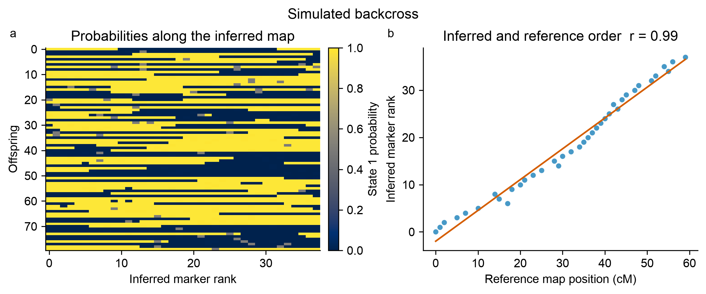

Step-by-step guide
This guide takes you from a new Python environment to an interpreted SoftMap result. Start with the included example, then replace it with one linkage group from your own data.
What SoftMap does
SoftMap orders markers within one already identified linkage group. It does not discover linkage groups or estimate centimorgan distances. Its input is a matrix of phased, binary parental-origin probabilities.
1. Check that your data are suitable
Use SoftMap when all of the following are true:
- Your population is doubled haploid, backcross, or a phased RIL-like population.
- Each marker can be expressed as the probability of inheriting parental state 1.
- Markers have already been assigned to a linkage group; you will analyze one group at a time.
- Your matrix has at least two offspring and two markers.
Probabilities near 0 and 1 mean strong evidence for the two parental states.
Use 0.5 when the state is unknown. In particular, do not convert an unphased
heterozygote to a confident 0 or 1.
General F2 and full-sib data need phase-aware modeling that SoftMap does not currently provide. See Which data work best? before using one of those designs.
2. Create an environment and install SoftMap
Open a terminal in a new working directory and run:
The package is currently installed from its GitHub repository because it has not yet been released on PyPI.
Check the installation:
You should see SoftMap is ready. If you open a new terminal later, activate the
environment again before running SoftMap.
3. Run a small example
Create a file named first_map.py. This complete example fits a map, saves the
figure, and prints results that you can inspect:
from pprint import pprint
import softmap
# Generate, fit, and plot a reproducible simulated backcross.
data = softmap.demo()
mapping = softmap.fit(data)
figure = mapping.plot("map.png")
print("Fit summary")
pprint(mapping.summary())
print("\nFirst five ordered markers")
pprint(mapping.ordered_markers[:5])
print("\nFirst five marker records")
pprint(mapping.marker_table()[:5])
print("\nPlot panels")
pprint([axis.get_title() for axis in figure.axes if axis.get_title()])
Run it:
The terminal prints the fit summary, ordered markers, detailed marker records, and
plot-panel titles. The same directory now contains map.png. Open it in a browser
or image viewer; it should look like this:

The left panel displays parental-state probabilities after ordering. Long, contiguous blocks are inheritance segments and changes between them are candidate crossovers. Gray values are uncertain observations. The right panel compares the inferred ranks with the known reference positions for this simulated dataset. The orientation is aligned only for display.
The default uses 20 bootstrap replicates so that it finishes quickly. That is enough for learning and code checks, but not for a final scientific analysis.
4. Understand the example result
mapping.summary() returns:
| Field | Meaning |
|---|---|
status |
ok when at least three framework markers are supported; otherwise limited_support. |
offspring |
Number of rows in the input matrix. |
markers |
Number of input marker columns. |
bins |
Number of distinguishable co-segregation groups. |
framework_markers |
Number of markers whose relative order reaches the requested support. |
confidence |
Pairwise support threshold used to select the framework. |
mapping.ordered_markers contains every marker in the inferred order.
mapping.framework_markers is the smaller, more defensible ordered framework. The
full order is useful for exploration, but biological conclusions should reflect
the framework and the uncertainty shown in the plot.
mapping.marker_table() gives one dictionary per input marker. Each row contains:
| Field | Meaning |
|---|---|
marker |
Input marker name. |
bin |
Co-segregation bin identifier. |
order_rank |
Inferred rank of the marker's bin. |
is_representative |
Whether this marker represents its bin in the fitted order. |
framework_rank |
Supported framework position, or None when it is not in the framework. |
interval_left, interval_right |
Bootstrap placement bounds in representative-bin ranks. |
The plot call returns a standard Matplotlib Figure. You can inspect or customize
it before saving another version:
print(figure.axes)
figure.suptitle("My first SoftMap result")
figure.savefig("map.svg", bbox_inches="tight")
The input remains available as mapping.data, and the fitted low-level result as
mapping.result. Most first analyses only need summary(), ordered_markers,
framework_markers, marker_table(), and plot().
Map orientation is arbitrary: a reversed order represents the same linkage map. Several markers can also occupy one co-segregation bin when the offspring contain no evidence that separates them.
5. Prepare your own probability matrix
For Python, arrange the values as offspring in rows and markers in columns:
m1 |
m2 |
m3 |
|
|---|---|---|---|
| offspring 1 | 0.01 | 0.02 | 0.95 |
| offspring 2 | 0.99 | 0.97 | 0.04 |
| offspring 3 | 0.50 | 0.92 | 0.08 |
Save the probability values as probabilities.npy and the names as one marker per
line in marker_names.txt. For example, if you are converting an existing table
with NumPy:
import numpy as np
probabilities = np.array(
[
[0.01, 0.02, 0.95],
[0.99, 0.97, 0.04],
[0.50, 0.92, 0.08],
],
dtype=float,
)
marker_names = ["m1", "m2", "m3"]
np.save("probabilities.npy", probabilities)
with open("marker_names.txt", "w", encoding="utf-8") as handle:
handle.write("\n".join(marker_names) + "\n")
Repeat the conversion separately for each linkage group.
Probabilities are not genotype labels
SoftMap does not accept allele strings such as AA, AB, and BB directly.
Convert calls or genotype likelihoods using a model appropriate for your cross.
A value of 0.5 means no information about the binary parental state; it does
not generally mean heterozygous.
6. Validate the files before fitting
Create run_softmap.py with these checks first:
from pathlib import Path
import numpy as np
import softmap
probabilities = np.load("probabilities.npy")
marker_names = Path("marker_names.txt").read_text().splitlines()
if probabilities.ndim != 2:
raise ValueError("Expected a 2D offspring-by-marker matrix")
if probabilities.shape[1] != len(marker_names):
raise ValueError("The number of marker names must match the matrix columns")
if probabilities.shape[0] < 2 or probabilities.shape[1] < 2:
raise ValueError("At least two offspring and two markers are required")
if not np.isfinite(probabilities).all():
raise ValueError("Replace missing/non-finite values with 0.5")
if ((probabilities < 0) | (probabilities > 1)).any():
raise ValueError("Every probability must be between 0 and 1")
if len(set(marker_names)) != len(marker_names):
raise ValueError("Marker names must be unique")
print(f"Loaded {probabilities.shape[0]} offspring and "
f"{probabilities.shape[1]} markers")
print(f"Uninformative values (0.5): {(probabilities == 0.5).mean():.1%}")
Run python run_softmap.py. Resolve any reported error before continuing. A large
fraction of 0.5 values is not automatically invalid, but it reduces ordering
information and should prompt a review of data quality.
7. Fit your first map
Append this code to run_softmap.py:
data = softmap.LinkageData(
probabilities=probabilities,
marker_names=tuple(marker_names),
label="Linkage group 1",
)
# Diagnostic run: quick enough to check the inputs and outputs.
mapping = softmap.fit(
data,
bootstrap=20,
confidence=0.8,
seed=7,
bin_threshold=0.01,
)
print(mapping.summary())
mapping.plot("linkage_group_1_diagnostic.svg")
Path("linkage_group_1_order.txt").write_text(
"\n".join(mapping.ordered_markers) + "\n"
)
Path("linkage_group_1_framework.txt").write_text(
"\n".join(mapping.framework_markers) + "\n"
)
Run it with python run_softmap.py. Confirm that all three output files exist and
that the reported offspring and marker counts match what you intended to analyze.
8. Inspect the diagnostic result
Before increasing the run size, ask:
- Did SoftMap create substantially fewer bins than input markers? If so, many markers co-segregate at the information level available in these offspring.
- Is the status
limited_support? This means the requested confidence threshold did not support a framework of at least three markers. It is a result to investigate, not a software failure. - Does the probability panel contain many uncertain values or isolated state changes? Missingness and genotype errors can resemble crossovers.
- Are you interpreting only orientation-independent order? A map and its reverse are equivalent unless external anchors establish orientation.
If support is limited, first verify the matrix orientation, cross design, phase, linkage-group assignment, missing-data encoding, and marker quality. More informative offspring usually help more than adding markers that share the same segregation pattern.
9. Run the final analysis
Once the diagnostic run is sensible, increase the bootstrap count to at least 100:
mapping = softmap.fit(
data,
bootstrap=100,
confidence=0.8,
seed=7,
bin_threshold=0.01,
)
mapping.plot("linkage_group_1_final.svg")
print(mapping.summary())
Keep the seed in your analysis record so the bootstrap result is reproducible. As
a stability check, repeat the fit with a few reasonable seeds and bin thresholds.
For example, compare bin_threshold=0.005, 0.01, and automatic selection with
bin_threshold=None. A conclusion that changes substantially across reasonable
settings should be reported as uncertain.
The confidence value controls framework stringency. Increasing it requires
stronger pairwise order support and can make the framework smaller. Do not lower it
only to obtain a longer framework; choose it as part of the analysis plan and
report it with the bootstrap count and bin threshold.
10. Optional: run from the command line
If you prefer not to write Python, make a tab-separated file with markers in rows and offspring in columns:
marker\toffspring_1\toffspring_2\toffspring_3
m1\t0.01\t0.99\t0.50
m2\t0.02\t0.97\t0.92
m3\t0.95\t0.04\t0.08
Then run:
The command prints a JSON summary and writes map.tsv. Its columns mean:
| Column | Meaning |
|---|---|
marker |
Input marker name. |
bin |
Co-segregation bin identifier. |
order_rank |
Inferred rank of that bin; lower ranks occur earlier in the map. |
is_representative |
1 for the marker representing its bin, otherwise 0. |
framework_rank |
Supported framework position, blank if the bin is not in the framework. |
interval_left, interval_right |
Bootstrap placement bounds in representative-bin ranks. |
The CLI input is transposed relative to the Python matrix: markers are rows in the TSV because that makes the file easier to read, but the Python API always expects offspring-by-marker arrays.
11. Save enough information to reproduce the map
For each linkage group, keep:
- the exact input probabilities and marker names;
- how raw observations were converted to probabilities;
- SoftMap and Python versions;
- bootstrap count, confidence, seed, and bin threshold;
- the summary, full order, supported framework, and figure;
- any marker filtering and the reason for it.
You now have a complete first analysis. The input data guide gives more detail on probability encoding, the plotting guide covers figures, and the algorithm guide explains how the order and support are calculated.
Common problems
ModuleNotFoundError: No module named 'softmap'
Activate the environment created in step 2 and install the package in that same
environment. Using python -m pip helps ensure that pip belongs to the Python
interpreter you will run.
Marker names do not match the columns
For the Python API, probabilities.shape[1] must equal the number of marker names.
If the values came from a marker-by-offspring table, transpose it once before
fitting.
Probabilities are outside zero to one
SoftMap needs probabilities, not read counts, dosage values, or genotype codes. Return to the conversion step and use an appropriate probabilistic model.
The result has limited_support
Check cross design, phase, linkage-group assignment, matrix orientation, missingness, and genotyping quality. The data may genuinely contain too few informative crossovers to resolve a longer framework.
The inferred order is reversed
This is expected. Linkage-map orientation is arbitrary unless a physical map or other external anchor defines a direction.